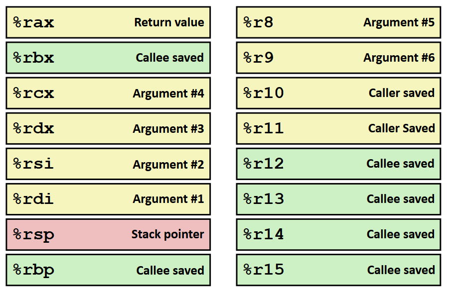
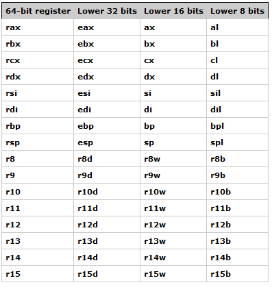
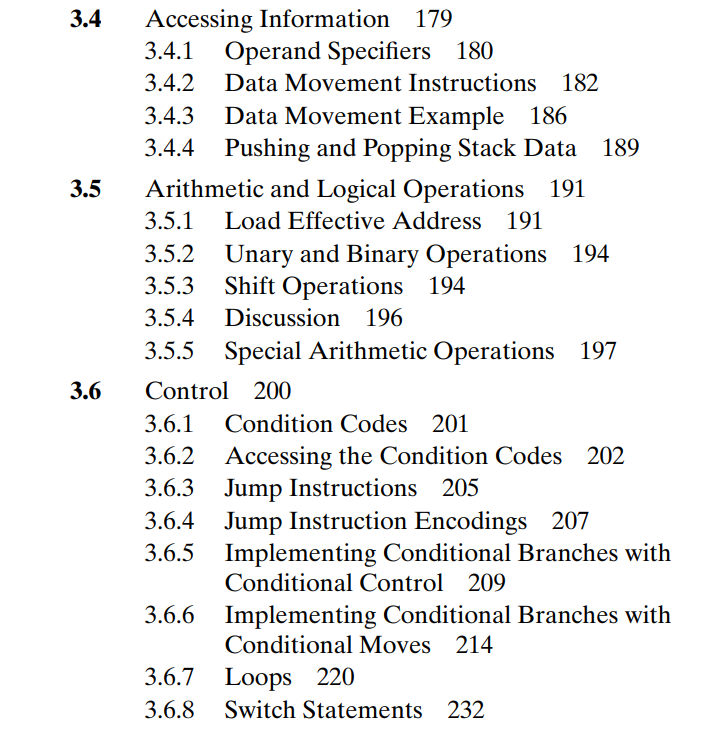
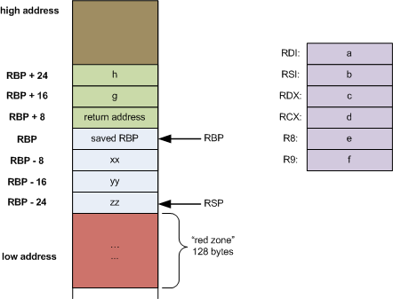

Computersysteme
Assembly Language
Simon Mayer
University of St.Gallen
Bachelor in Computer Science
Computersysteme (1,904)
From insight to impact.
Course Syllabus
Computersysteme | Institute of Computer Science | University of St.Gallen
2Our Journey So Far…
| Step | Building blocks | Where |
|---|---|---|
| Information | Binary digits + context: numbers, text, pixels and colors, instructions | Lecture 1: done! |
| Logic + arithmetic | School mathematics (logic, set theory); logic operations (NOT, NOR, …, NAND) | Lecture 2: done! |
| Electronics | Logic gates from electronic components (today: transistors) | Lecture 2: done! |
| Calculator | Adder circuits and circuits for other arithmetic functions: a general-purpose calculator! | Lecture 2: done! |
| Processor | Function selector, arithmetic/logic unit, control unit, registers: voilà, a CPU! | Lecture 3: done! |
| Programs | Instruction sets, machine code and assembly language | Lecture 3, and today |
Computersysteme | Institute of Computer Science | University of St.Gallen
3Our Menu for Today
Introduction to Assembly Language
Registers and Memory
Assembly Operands
Common Assembly Instructions
Conditionals and Loops
A simple Exploit
Computersysteme | Institute of Computer Science | University of St.Gallen
4Why do we look at Assembly Code?
Examples you will see today and just after the break:
- Assembly code makes normally hidden processor state visible: it lets us look into the very essence of computing
- Program counter (PC)
- the memory address of the next instruction (like 0x100 to 0x108 in our small ISA)
- Register file
- 16 named locations for 64-bit values (addresses and data); some special-purpose, others general-purpose
- Condition code registers
- status of the most recent arithmetic or logical instruction (needed for if/else and loops!)
Computersysteme | Institute of Computer Science | University of St.Gallen
5Assembly Overview
- From a given starting position, there is a unique encoding of bytes to machine instructions
- More common instructions have shorter encodings
- There are different ISAs for different architectures (lecture: x86-64; exercise: ARMv8)
- There are different styles within one architecture (AT&T vs. Intel)
- Compiler optimizations have a large impact on the program!
- Rearrange execution order
- Eliminate unneeded operations
- Replace slow (machine) operations with faster ones
Intel syntax mov eax,[ebx+20h] add eax,[ebx+ecx*2h] lea eax,[ebx+ecx] AT&T syntax movl 0x20(%ebx),%eax addl (%ebx,%ecx,0x2),%eax leal (%ebx,%ecx),%eax
Computersysteme | Institute of Computer Science | University of St.Gallen
6Demo: Some Assembly Intuition
gcc -S prog.cgenerates assembly,gcc -c prog.cgenerates object code,objdump -d prog.odisassembles the object- Try it with
doubleMefrom lecture 3, or online: godbolt.org and the online x86 assembler - Look at both programs in the compiler explorer
int main()
{
int number = 3;
return number * 8;
}
int main()
{
int number = 3;
return number * 9;
}Computersysteme | Institute of Computer Science | University of St.Gallen
7First: Pointer Fun with Binky! :-D
Computersysteme | Institute of Computer Science | University of St.Gallen
8Some Assembly Intuition
- Look at both in the compiler explorer: godbolt.org
int foo(int x, int y) {
return x * y;
}
int main()
{
return foo(3, 8);
}
void swap(int* xp, int* yp)
{
int t0 = *xp;
int t1 = *yp;
*xp = t1;
*yp = t0;
}Computersysteme | Institute of Computer Science | University of St.Gallen
9Our Menu for Today
Introduction to Assembly Language
Registers and Memory
Assembly Operands
Common Assembly Instructions
Conditionals and Loops
A simple Exploit
Computersysteme | Institute of Computer Science | University of St.Gallen
10Remember our small instruction set?
In lecture 3, this program kept adding 8 to M[00]: 2 … 10 … 18 … 26 … 34 …
Just 2 registers sounds a bit limiting…
0x100 100001000 Insert 2 0x102 100100001 Insert 8 0x104 000000 Load M[00] 0x105 000011 Load M[01] 0x106 0100 Add 0x107 001000 Store to M[00] 0x108 101000100000110 Jump to 0x106
Computersysteme | Institute of Computer Science | University of St.Gallen
11x86-64 Registers
- x86-64 has 16 named registers
- These can store 64 bits each
- They are very close to the processor: it can access register values almost instantaneously (i.e., within one processor cycle, multiple billion times per second)
- Very informative: Wikibooks: x86 Architecture

Computersysteme | Institute of Computer Science | University of St.Gallen
12x86-64 Registers: Naming
| Architecture | Registers | Names |
|---|---|---|
| 8080 (1974) | six paired registers | (B,C), (D,E), (H,L) |
| 8086 (1978) | 8× 16-bit registers | %ax, %bx, … %si, %di, %bp |
| IA32 (1985) | 8× 32-bit registers | %eax, %ebx, …, %ebp |
| x86-64 (2000) | 16× 64-bit registers | %rax, %rbx, …, %r8 … %r15 |
Computersysteme | Institute of Computer Science | University of St.Gallen
13x86-64 Registers: Names for Parts of a Register
- %rdi, %rax, %rbx, %rcx, etc. denote the entire 64 bits (i.e., the so-called quad-word) of a register
- To address the other, low-order portions, other names are used:
- %edi, %eax, etc.
- 32 bits, double-word («l» or «d»)
- %di, %ax, etc.
- 16 bits, word («w»)
- %dil, %al, etc.
- 8 bits, byte («b»)

Computersysteme | Institute of Computer Science | University of St.Gallen
14x86-64 Registers: Who Saves What?
- Caller saved
- the caller of a procedure needs to take care of these registers, no guarantees: foo() may override %r10
- Callee saved
- the caller can trust that these hold the same value after a call: main can trust that %rbx is unchanged. If foo() uses that register, it needs to restore the value before returning to main()
- Stack pointer
- indicates the current position in the run-time stack (more on this next week)
main() {
int i = 2;
foo();
i = i + 1;
}Computersysteme | Institute of Computer Science | University of St.Gallen
15Our Menu for Today
Introduction to Assembly Language
Registers and Memory
Assembly Operands
Common Assembly Instructions
Conditionals and Loops
A simple Exploit
Computersysteme | Institute of Computer Science | University of St.Gallen
16Assembly Operands
An x86-64 instruction has zero to three operands (ret, notq %rax, addq %rdi, %rax, imulq $300, %rdi, %rax). Operands are always one of three types:
| Type | Example | Means |
|---|---|---|
Immediate operand (prefixed with $) | addq $16, %rcx, subq $0x4050, %rax | the value itself |
Register name (prefixed with %) | addq %rdx, %rcx | the content of the register |
| Absolute memory location (usually hex) | 0x104 | Mem[0x104] |
| Memory location | (%rax) | Mem[%rax] |
| Scaled indexed displaced memory location | 0x14(%rax,%rdx,4) | Mem[0x14 + %rax + %rdx × 4] |
| In general | d(Rb,Ri,s) | Mem[d + Rb + Ri × s] |
Computersysteme | Institute of Computer Science | University of St.Gallen
17What's the value and type of each of these operands?
%rax$0x1080x104(%rax)4(%rax)(%rax,%rdx,4)
Given register contents %rax 0x100 %rcx 0x1 %rdx 0x3 Given memory contents 0x100 0xFF 0x104 0xAB 0x108 0x13 0x10C 0x11
Memory is byte-addressable; the table simply shows one 4-byte word per row.
Computersysteme | Institute of Computer Science | University of St.Gallen
18Value and Type of Each Operand
| Operand | Value | Type |
|---|---|---|
%rax | 0x100 | register name |
$0x108 | 0x108 | immediate value |
0x104 | 0xAB | absolute memory location |
(%rax) | 0xFF | memory location |
4(%rax) | 0xAB | memory location |
(%rax,%rdx,4) | 0x11 | memory location |
Computersysteme | Institute of Computer Science | University of St.Gallen
19Why exactly 0x11?
- %rax contains 0x100 (a memory address, i.e., a pointer)
- %rax + 4 × %rdx = 0x100 + 4 × 0x3 = 0x100 + 0xC = 0x10C
- The parentheses ( ) tell us that we need to dereference 0x10C: Mem[0x10C] = 0x11
(%rax,%rdx,4) = Mem[%rax + %rdx * 4] = Mem[0x100 + 0x3 * 4] = Mem[0x10C] = 0x11
Computersysteme | Institute of Computer Science | University of St.Gallen
20Our Menu for Today
Introduction to Assembly Language
Registers and Memory
Assembly Operands
Common Assembly Instructions
Conditionals and Loops
A simple Exploit
Computersysteme | Institute of Computer Science | University of St.Gallen
21Data Movement
Data movement from source to destination.
x86-64 data movement instructions (excerpt)
mov(b/w/l/q): move byte/word/double-word/quad-wordmovabsq: move an absolute 64-bit immediate value
Observations
- We can move chunks of 8, 16, 32, and 64 bits
- Movement from memory to memory is not permitted in general!
Computersysteme | Institute of Computer Science | University of St.Gallen
22Moving Immediate Values
| Instruction | Contents of %rax afterwards |
|---|---|
1: movabsq $0x0011223344556677, %rax | 0x0011223344556677 |
2: movb $-1, %al | 0x00112233445566FF |
3: movw $-1, %ax | 0x001122334455FFFF |
4: movl $-1, %eax | 0x00000000FFFFFFFF |
5: movq $-1, %rax | 0xFFFFFFFFFFFFFFFF |
Line 4 is not an error. It is due to the standard convention of how double-words are copied (it avoids partial-register dependencies)!
Computersysteme | Institute of Computer Science | University of St.Gallen
23Moving between Registers and Memory
Remember: d(Rb,Ri,s) = Mem[d + Rb + Ri × s]
| Step | %rax | %rbx | Memory |
|---|---|---|---|
| Start | 0x?..? | 0x?..? | 0x0..00 to 0x0..0C: all 0x?..? |
1: movq $0x000000000000AFFE, %rax | 0x0..AFFE | 0x?..? | unchanged |
2: movq $0x0000000000000008, %rbx | 0x0..AFFE | 0x0..08 | unchanged |
3: movq %rax, (%rbx) | 0x0..AFFE | 0x0..08 | 0x0..08: 0x0..AFFE |
4: movq %rax, -8(%rbx) | 0x0..AFFE | 0x0..08 | 0x0..00: 0x0..AFFE, and 0x0..08: 0x0..AFFE |
Computersysteme | Institute of Computer Science | University of St.Gallen
24Binky's Data Movement Exercise
- Compiled with the compiler explorer (optimization level
-O1) - Observation: C pointers are simply addresses in memory
- Arguments are assigned to registers in order: %rdi → %rsi → %rdx → %rcx → %r8 → %r9
- In this example,
xpointergoes into %rdi,ygoes into %rsi
long exchange(long* xpointer, long y) {
long x = *xpointer;
*xpointer = y;
return x;
}
exchange:
movq (%rdi), %rax
movq %rsi, (%rdi)
retComputersysteme | Institute of Computer Science | University of St.Gallen
25Sample Exam Question (6pt ~ 6min)
(6pt) Complete the figure given the following information:
- Register RSI contains the value 12
- Register RDX contains the value 0xFFFFFFFF
- Register RAX represents a pointer to memory location 0xFFFF0000
- What is the result of the processor executing the instruction
movq (%rax), %rsi? - The memory location immediately below 0xFFFF0000 is called 0xFFFF0008. Why?
Register file %rax ? %rdx ? %rsi ? %rdi 0x0000FFFF Memory 0x00000000 0x0000FFFF 42 0xFFFF0000 68 0xFFFF0008 144 0xFFFFFFFF
Computersysteme | Institute of Computer Science | University of St.Gallen
26Sample Exam Question: Solution
movq (%rax), %rsireads the quad-word at the address in %rax (0xFFFF0000) into %rsi: 12 becomes 68- A quad-word has 8 bytes, and memory is byte-addressable: the next quad-word starts at 0xFFFF0008
Register file %rax 0xFFFF0000 %rdx 0xFFFFFFFF %rsi 12 -> 68 %rdi 0x0000FFFF Memory 0x00000000 0x0000FFFF 42 0xFFFF0000 68 0xFFFF0008 144 0xFFFFFFFF
Computersysteme | Institute of Computer Science | University of St.Gallen
27Arithmetic and Logic Operations
| Instructions | Example | Effect |
|---|---|---|
inc, dec, neg, not (b/w/l/q) | incq (%rsp) | increments the value stored at the memory location pointed to by %rsp by $1 |
add, sub (b/w/l/q); imul (w/l/q: 64b from 64b × 64b) | subq %rax, %rdx | reduces the value in %rdx by the value in %rax |
xor, or, and (b/w/l/q) | orq %rax, %rbx | binary OR, denoted using the pipe symbol: 001b | 100b = ???b |
sal, shl (same as sal), sar, shr (b/w/l/q) | salq $3, %rax | shifts the value in %rax left by 3 bits: multiplies it by 8 |
leaq S, D: works like mov, but only computes the address and does not access memory at all | movq $5, %rdxleaq 7(%rdx,%rdx,2), %rax | computes %rax as 7 + 5 + 5 × 2 = 22 |
Computersysteme | Institute of Computer Science | University of St.Gallen
28Arithmetic and Logic Operations Exercise
- Where do the arguments go? x → %rdi, y → %rsi
- We compile this to assembly line by line…
long arith(long x, long y) {
long t1 = x | y;
t1 = t1 - y;
t1 = t1 * 48;
return t1;
}
arith:
orq %rsi, %rdi
subq %rsi, %rdi
imulq $48, %rdi
movq %rdi, %raxComputersysteme | Institute of Computer Science | University of St.Gallen
29Arithmetic and Logic Operations Exercise: Without imulq
- %rax = t1, then t1 + t1 = 2 × t1, then + t1 = 3 × t1
- Shifting left by 4 bits multiplies by 16: 3 × 16 = 48
- Lecture 1: Shifting
arith: orq %rsi, %rdi subq %rsi, %rdi movq %rdi, %rax addq %rax, %rax addq %rdi, %rax salq $4, %rax
Computersysteme | Institute of Computer Science | University of St.Gallen
30Potential Exam Question (5p)
xorq %rcx, %rcx computes a bit-by-bit xor of a register's contents with the same register's contents, and stores the result in that register.
defuse.ca/online-x86-assembler.htm
Computersysteme | Institute of Computer Science | University of St.Gallen
31Alternative: movq $0, %rcx. The encoding of xorq %rcx, %rcx might be shorter than for the movq $0, %rcx operation.Our Menu for Today
Introduction to Assembly Language
Registers and Memory
Assembly Operands
Common Assembly Instructions
Conditionals and Loops
A simple Exploit
Computersysteme | Institute of Computer Science | University of St.Gallen
32Conditionals Intuition
- Same for both!
- This also works for loops: we jump back, as in our small ISA
long conditionalsExample(long x) {
if (x > 0) {
return 1;
} else {
return 0;
}
}
long conditionalsExample(long x) {
if (x <= 0) goto mark;
return 1;
mark:
return 0;
}Computersysteme | Institute of Computer Science | University of St.Gallen
33Conditionals Intuition: The Assembly
- Same for both C versions!
- Variable x is located in %rdi
conditionalsExample(long):
pushq %rbp
movq %rsp, %rbp
movq %rdi, -8(%rbp)
cmpq $0, -8(%rbp)
jle .L6
movl $1, %eax
jmp .L4
.L6:
nop
movl $0, %eax
.L4:
popq %rbp
retComputersysteme | Institute of Computer Science | University of St.Gallen
34Condition Code Registers
- Single-bit registers («flags») that hold attributes of the most recent arithmetic, logical or comparison operation
- Logical operations always set CF and OF to zero (there cannot be an overflow)
- Shift operations set CF to the last bit shifted out; OF is defined only for 1-bit shifts
- CF
- carry flag: set on a carry out
- ZF
- zero flag: set if the result is zero
- SF
- sign flag: set if the result is negative
- OF
- overflow flag: set on a 2's complement overflow
Computersysteme | Institute of Computer Science | University of St.Gallen
35Condition Codes
We do not have to execute arithmetic or logic operations just to set condition codes. We can set them explicitly through cmp and test:
cmpdoes asub, but without remembering the result. It just remembers the condition codestestdoes anand, but without remembering the result. It just remembers the condition codes
cmp(b/w/l/q) A, B # CCs from B - A test(b/w/l/q) A, B # CCs from A & B testq %rax, %rax # compare %rax to itself to see # whether its content is negative, # zero or positive
Computersysteme | Institute of Computer Science | University of St.Gallen
36Control Flow: Conditionals
- Logic, arithmetic and comparison instructions (testq and cmpq) set condition codes
- Conditional jumps and conditional moves read them
- These jumps and moves implement conditionals, switches and loops in a computer system
void loopToZero(long x) {
do {
x = x - 1;
} while (x > 0);
}
// Same as:
void loopToZero(long x) {
myMark:
x = x - 1;
if (x > 0) goto myMark;
}
// Compiled:
loopToZero(long):
.L2:
subq $1, %rdi
testq %rdi, %rdi
jg .L2
retComputersysteme | Institute of Computer Science | University of St.Gallen
37Condition Codes to Conditionally Jump
| Instruction | Jump… |
|---|---|
jmp Label | unconditional jump: always jumps! |
jmp *Operand | to the location read from memory |
je Label | if equal (zero flag set) |
jne Label | if not equal (zero flag not set) |
js Label | if negative (sign flag set) |
jns Label | if nonnegative (sign flag not set) |
Computersysteme | Institute of Computer Science | University of St.Gallen
38Condition Codes to Conditionally Jump: Signed and Unsigned
| Signed | Jump… | Unsigned | Jump… |
|---|---|---|---|
jg Label (= jnle) | if greater / if not less or equal (>) | ja Label (= jnbe) | if above (>) |
jge Label (= jnl) | if greater or equal / if not less (>=) | jae Label (= jnb) | if above or equal (>=) |
jl Label (= jnge) | if less (<) | jb Label (= jnae) | if below (<) |
jle Label (= jng) | if less or equal (<=) | jbe Label (= jna) | if below or equal (<=) |
Computersysteme | Institute of Computer Science | University of St.Gallen
39Conditional Jumps Example
- C:
long checkEquals(long x, long y) { if (x == y) return 1; else return 0; } - Where do the arguments go? x → %rdi, y → %rsi
checkEquals(long, long): pushq %rbp movq %rsp, %rbp movq %rdi, -8(%rbp) movq %rsi, -16(%rbp) movq -8(%rbp), %rax cmpq -16(%rbp), %rax jne .L2 movl $1, %eax jmp .L3 .L2: movl $0, %eax .L3: popq %rbp ret
Computersysteme | Institute of Computer Science | University of St.Gallen
40Loop Example
- Argument x goes into register %rdi
long obscureCounter(long x) {
do {
???
} while (???);
}
obscureCounter(long):
pushq %rbp
movq %rsp, %rbp
movq %rdi, -8(%rbp)
.L3:
subq $3, -8(%rbp)
cmpq $0, -8(%rbp)
jle .L2
jmp .L3
.L2:
nopComputersysteme | Institute of Computer Science | University of St.Gallen
41do { x = x - 3; } while (x > 0);Extensive Conditional Jumps Exercise
This is NOT an example of a good exam question, but it's good for training.
long inkognito(long x, long y) { … }- Remember: arguments are assigned to registers in order: %rdi → %rsi → %rdx → %rcx → %r8 → %r9
inkognito(long, long): pushq %rbp movq %rsp, %rbp movq $0, -8(%rbp) .L3: cmpq $0, %rdi jle .L2 movq %rsi, %rax addq %rax, -8(%rbp) subq $1, %rdi jmp .L3 .L2: movq -8(%rbp), %rax popq %rbp ret
Computersysteme | Institute of Computer Science | University of St.Gallen
42Extensive Conditional Jumps Exercise: Step by Step
inkognito(long, long): pushq %rbp movq %rsp, %rbp movq $0, -8(%rbp) # store a $0 in memory .L3: cmpq $0, %rdi # CCs from (%rdi - $0) jle .L2 # jump if less or equal… movq %rsi, %rax # %rax = y addq %rax, -8(%rbp) # add %rax to the value in memory subq $1, %rdi # %rdi = %rdi - 1 jmp .L3 # jump! .L2: movq -8(%rbp), %rax # move the value from memory to %rax popq %rbp ret
Computersysteme | Institute of Computer Science | University of St.Gallen
43Extensive Conditional Jumps Exercise: Cleaned Up…
- For x > 0, inkognito adds y to itself x times: it multiplies x and y
- Remember: multiplying is just repeated adding (lecture 1)
long inkognito(long x, long y) {
long val = 0;
while (x > 0) {
val = val + y;
x = x - 1;
}
return val;
}Computersysteme | Institute of Computer Science | University of St.Gallen
44Any Questions / Comments / Doubts / Concerns?
Take-Homes
- You have seen many frequently occurring assembly instructions in the x86-64 ISA
- Conditionals and loops are simply implemented as «jumps» on the machine. In C, we call these «gotos»; the ARMv8 ISA calls them «branches»
- Get a feeling for assembly by training, and by experimenting with the compiler explorer at godbolt.org
- Exercise 2 gives you an opportunity to train: among other tasks, you will reverse-engineer a program from assembly

Computersysteme | Institute of Computer Science | University of St.Gallen
45
How to Study this Material?
Basic Depth
Advanced Depth
- Really, it's enough if you understand Bryant and O'Hallaron up to chapter 3.6 and all slide contents

Computersysteme | Institute of Computer Science | University of St.Gallen
46Our Menu for Today
Introduction to Assembly Language
Registers and Memory
Assembly Operands
Common Assembly Instructions
Conditionals and Loops
A simple Exploit
Computersysteme | Institute of Computer Science | University of St.Gallen
47Demo: Read out lots of memory…
- Write «Hello World» to memory
- Print the memory location of caArray[iIndex], and the memory contents at caArray[iIndex]
- Increase the array index
- Keep running forever (i.e., until you're stopped…)
#include <iostream>
using namespace std;
int main() {
char caArray[] = "Hello World";
int iIndex = 0;
while(true) {
cout << "Address: "
<< (int*)(&(caArray[iIndex]));
cout << " Char: " << caArray[iIndex]
<< endl;
iIndex = iIndex + 1;
}
return 0;
}Computersysteme | Institute of Computer Science | University of St.Gallen
48Demo: Stack Exploit!
int bar() {
// Let's try to find foo's secret number...
}
int foo() {
int fooSecretNumber = 0xAFFE;
bar();
return 0;
}
int main() {
foo();
}Computersysteme | Institute of Computer Science | University of St.Gallen
49For the Interested: Double-Pointer Example
int* sPointer = (int*)0x100; int** fPointer = (int**)0x10c; *sPointer = 5; *fPointer = sPointer; fPointer = 0x100; *fPointer = 9; // This would work! **fPointer = 9;
Computersysteme | Institute of Computer Science | University of St.Gallen
50For the Interested: What happens for more than 6 arguments?
long myfunc(long a, long b, long c, long d, long e, long f, long g, long h)
- Arguments are assigned to registers in order: %rdi → %rsi → %rdx → %rcx → %r8 → %r9
- The remaining arguments g and h are on the stack, above the return address

Computersysteme | Institute of Computer Science | University of St.Gallen
51Any Questions / Comments / Doubts / Concerns?
Computersysteme | Institute of Computer Science | University of St.Gallen
52